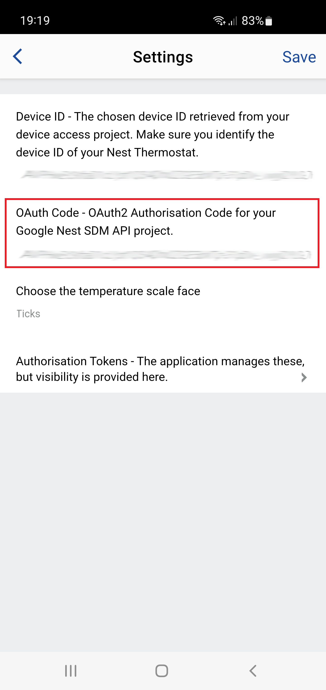

Google will refuse to complete Open Authentication using the stock internal method due to recent security changes. Instead, copy and paste the authentication key from the text box below into your installed application's settings.
Terminology is a bit loose here, this is not the access nor refresh OAuth tokens, but the step before that you may never see as it completes in the background and is usually picked up by a waiting embedded browser to extract the &code= value and continue the OAuth process. Note, the OAuth 2.0 spec recommends that the authorization response has a maximum lifetime of 10 minutes, but in practice, most services set the expiration much shorter, around 30-60 seconds.
On your mobile device, start the Connect IQ App and find the ThermoNest application settings. The red box indicates where to paste the value. You do not need to enter a code for the device as a selection box will be presented to you on first use.
Save your settings and start the application on your watch before the key expires, i.e. within 10 mins (according to "The OAuth 2.0 Authorization Framework", IETF RFC6749). The application will then use this code to create access and refresh tokens and store those locally to save future authentications being necessary.
Link to start again and get new OAuth code.
Manage your account's partner connections via Google Partner Connections Manager.
Part of the Garmin ThermoNest project.